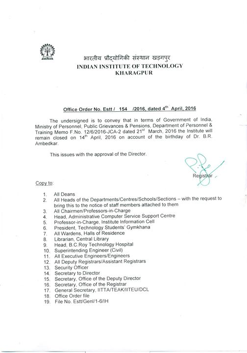

Posted on: 2016-04-09T15:13:43+0000
Due to sudden and heavy rains, the road from Tikka to Vikramshila has been blocked by fallen trees. Do remain cautious if you're in its vicinity.

Posted on: 2016-04-09T12:34:00+0000
Information dissemination has always been our key concern. We have noticed that that people often miss opportunities/events because of the lack of information propagation. Mass mail often reaches all students. Therefore, we are presenting a solution to this. A common google group which will contain all institute and TSG related updates.
I request you to join this group-
https://groups.google.com/forum/#!forum/technology-students-gymkhana-iit-kharagpur
Posted on: 2016-04-09T11:38:37+0000
How To Use Email Broadcasting - Marketing Automation
Posted on: 2016-04-09T07:38:06+0000
First JNU and now NIT Srinagar. The rising issues of violence and internal conflicts in the prominent institutes of India is really disappointing and alarming too to some extent. We all are aware of the situations in Srinagar, if not through the so much reliable sources but through the very media sources available to us.
On Thursday, after India lost the World T20 semi-final to West Indies, some students from the locality of Kashmir chanted anti-India slogans and started bursting firecrackers. It all started with the match between India and Pakistan. There were minor clashes and anti-India sloganeering. But things got worst after the semifinal. In retaliation to what happened students from outside Kashmir waved the Indian Tricolor and chanted ‘Bharat Mata ki Jai’ and since then NIT Srinagar has turned into a battleground. According to one student “Even on Friday, a group of students assembled on the campus and raised anti-India and pro-Pakistan slogans. Many outsiders also joined the protests”.
Things were kind of normal till then also, but it turned out worst when the local police instead of being the saviour and the protector became the demons of the students' dreams. They beat students mercilessly, snatched the Indian Flag from the protesters and what not. Peaceful protesting students were lured out by the police making an excuse of interaction with media and then ruthless lathi charge began and the students were thrashed mercilessly.
Amidst this crisis, the Non-Kashmiri students were told to vacate the hostels while they are getting life threatening calls from separatist elements outside the campus. Even girls were not spared, they too were given the threats of rapes.
According to the recent news, 11 student representative including a woman student were secretly taken to a meeting with Deputy CM and Education minister of Jammu and Kashmir. The students have been assured of their safety and promises have been made to take steps to make the situation easy for the students.
The irony of the act is that it was due course of time when similar situations arose in JNU campus too and then no policemen were allowed to enter the university and now there in Srinagar, the Police entered the premises, thrashed the students and no one dared to say anything.
This one big and life threatening incident didn't hit the internet as another trp gaining so-called popular happenings. This only came into common peoples' notice when #NITSrinagar became trending on twitter. Once again Indian media has failed themselves.
Posted on: 2016-04-08T23:02:50+0000
We thank Awaaz, IIT Kharagpur for showing solidarity towards this issue too. We, the two media bodies of the campus, are surely going to keep in contact with the administration to ensure that justice prevails.
We urge every KGPian to contact Prof. B. N. Singh, the election officer, if they are aware of any sort of malpractice that happened in this year's elections. You can also contact Awaaz, IIT Kharagpur or us, or both, to give your statement, in which case, we will ensure total anonymity as we take your help to build the case.
Thank you.
Posted on: 2016-04-08T22:54:41+0000
Dear fellow KGPians,
Just a few days back, KGP elected their new Technology Students' Gymkhana, IIT Kharagpur student representatives but who would have had a thought that in the place where brightest minds of India resides, cases of booth capturing and vote rigging will be spotted. We being a media body are reporting this after receiving several messages from students across various Halls of Residence who are willing to give their written testimony on this matter. It was brought to our attention that there have been cases in some halls where students were sent back as their votes were already casted by proxies and votes of the people who are currently not in the campus were also cached. Moreover, there were cases, where certain hall representatives went from room-to-room asking for ID cards of students and instances of malpractice, where some students did not get to vote were also witnessed.
We appreciate the efforts made by The Scholars' Avenue in reporting such an issue of the campus. The voices of people who could not vote are not represented in this election, and we as being the students of science cannot allow for this sort of corruption in a system that represents us all. Due to the low margins of victory in various posts, these votes might have decided results. You may wonder that why are we hyping such a thing when such practices are quite common in TSG elections every year. We are doing this because we believe that on the ethical grounds such malpractices need a permanent break and the start on this must be an immediate one.
All in all, for such a stop to happen, we all have to stand united and make sure the matter doesn’t slide from us by ensuring that the authorities address these concerns in an appropriate manner.
We and the Team TSA are keeping a regular contact with the authorities and are making all our efforts to make a full stop to such practices and are pretty hopeful that authorities would take necessary steps that are legitimate to the student community.
Posted on: 2016-04-08T22:48:04+0000
Dear fellow KGPians,
Just a few days back, KGP elected their new Technology Students' Gymkhana, IIT Kharagpur student representatives but who would have had a thought that in the place where brightest minds of India resides, cases of booth capturing and vote rigging will be spotted. We being a media body are reporting this after receiving several messages from students across various Halls of Residence who are willing to give their written testimony on this matter. It was brought to our attention that there have been cases in some halls where students were sent back as their votes were already casted by proxies and votes of the people who are currently not in the campus were also cached. Moreover, there were cases, where certain hall representatives went from room-to-room asking for ID cards of students and instances of malpractice, where some students did not get to vote were also witnessed.
We appreciate the efforts made by The Scholars' Avenue in reporting such an issue of the campus. The voices of people who could not vote are not represented in this election, and we as being the students of science cannot allow for this sort of corruption in a system that represents us all. Due to the low margins of victory in various posts, these votes might have decided results. You may wonder that why are we hyping such a thing when such practices are quite common in TSG elections every year. We are doing this because we believe that on the ethical grounds such malpractices need a permanent break and the start on this must be an immediate one.
All in all, for such a stop to happen, we all have to stand united and make sure the matter doesn’t slide from us by ensuring that the authorities address these concerns in an appropriate manner.
We and the Team TSA are keeping a regular contact with the authorities and are making all our efforts to make a full stop to such practices and are pretty hopeful that authorities would take necessary steps that are legitimate to the student community.
Posted on: 2016-04-08T20:01:59+0000
Gymkhana awards 2015 - 2016
Application for the gymkhana awards in the genre of technology are invited for
1) Prof. G S Sanyal Cup.
2) Order of merit.
3) Hon'ble mention.
CVs should be mailed to gymkhana.kharagpur@gmail.com by 11/04/2016 at 6pm. All the relevant documents (supporting points mentioned in the CV) should be mailed along with the CV.
In the resumes following information can be included:
*Participation in the GC.
*Position of responsibilities.
*Participation in tech events (eg. KTJ, out station participation).
*Inter IIT Tech achievements.
*Meaningful projects and technical papers.
Regards
Posted on: 2016-04-08T17:26:46+0000
INTERHALL CHEMQUEST | TECH GC 2015-16
The halls which submitted the reports showing their analysis of the problem statement were given slots to present a brief analysis of their reports today. The judges were Professor Gargi Das and Professor Subabrata Ray from the Department of Chemical Engineering. The tentative standings as of today are:
Gold - LBS
Silver - RP
Bronze - SN
The results are subject to change for the next 48 hours. But they hold true for the moment nonetheless.
Stay tuned for more updates.
Posted on: 2016-04-08T17:24:10+0000
GC 2015-16 ll Technology ll Chem quest
Standings:
Gold :- LBS Hall (242.27 points)
Silver :- RP Hall (231.44 points)
Bronze :- SN Hall (222.34 points)
Now only the result of Maths Olympiad is remaining which has 75 points.
Updated General Championship Technology 2015-16 Points Tally :
1) LBS - 310 Points
2) Nehru - 250 Points
3) RP - 240 Points
4) Azad - 205 Points
5) SN - 130 Points
6) RK - 100 Points
7) LLR - 90 Points
8) HJB - 75 Points
9) Patel - 60 Points
10)MT - 40 Points
Awaaz IIT Kharagpur heartily congratulates the winner!
Posted on: 2016-04-08T17:02:02+0000
WorldQuant On Campus Presentation- IIT Kharagpur
Date: 11th April, 2016
Time: 6:00 PM
Topic:
WorldQuant Virtual Summer Training Program
Speaker: Anant Pushkar
Speaker Profile in brief: Anant is an IIT Kharagpur alumni. He graduated in 2015 and currently works with WorldQuant as a Quantitative Researcher.
Posted on: 2016-04-08T16:50:51+0000
Walking down the lane, after those exhaustive lab sessions you reach RK Hall and find yourself in between a great hustle with a lot of enthusiastic faces. The mess tables are not there in their usual place, instead old tradition mattresses are put on. You wonder what’s going on. Is this some kind of fest or grand dinner? But unlike grand dinner, there is something very sweet and historic about it.
Way back in 1990 when the mess workers of RK Hall were on indefinite strike and students were left to starve, one of the student named Anton Pios took the initiative to feed the students. He along with the other senior boarders of the Hall cooked food and fed everyone. This event was more of a symbolic importance as it established the fact that IIT Kharagpur students are capable of rising above the storms while fighting with the odds.
That gesture by Anton Pios had such a deep impact that the boarders of RK Hall have commemorated that event ever since by celebrating Anton Pios Day in the first week of April every year since 1991. A simple event in which seniors serve you food and mouth feed you with such number of rasgullas that you might not have eaten in literally your life.
Events like this re-establish the beautiful relationship between seniors and juniors that has been ordained by generations of students over decades of years. Awaaz, IIT Kharagpur takes this opportunity to thank Anton Pios for everything he did and to congratulate all those boarders of RK Hall who have not led this legacy to die.

Posted on: 2016-04-08T16:01:00+0000
Ingenium 2016
Ingenium 2015 was the most successful chapter. The event had more than 5700+ registrations from 26 states, 3 union territories and participation by 760+ colleges which are unprecedented in its history.
This year, Ingenium 2016 will be a new chapter which has grown bigger than ever before, gets even better bringing more dynamic and varied participation with increased class-leading industry representation.
INGENIUM CAMPUS AMBASSADOR PROGRAM (ICAP)
Technical knowledge with inter-personal managerial skills makes a student complete and competitive in today's world. In this direction our other initiative is Ingenium Campus Ambassador Program (ICAP). With ICAP we believe in recognizing talent with good leadership and collaborative skills. An Ingenium Campus Ambassador (ICA) would publicize and promote QuEST Ingenium in their respective campus while proving to be a focal for various participating teams in the institution.
ICAP is a proven platform to collaborate with numerous colleges across the country while able to learn and work in an organizational framework. The program recognizes well performing ICA's and incentivizes their effort by providing special passes to attend the final event.
Kindly visit www.questingenium.com
Students can register to Ingenium through www.questingenium.com/portal
Posted on: 2016-04-08T15:57:40+0000
Posted on: 2016-04-08T14:58:00+0000
Seminar Talk: 3D Designing and Visualization , Simpleware
DATE: Monday, 2:15 pm, April 18, 2016
LOCATION: Old SMST(Opp. to Kalidas Auditorium), IIT Kharagpur, Kharagpur, India
PRESENTER: Dr Yash Agarwal, Simpleware
This workshop is aimed at those interested in visualising, measuring, and
meshing 3D image data to generate 3D Printing, CAD, and Finite Element
models using Comsol, Abaqus, etc.
The workshop is FREE but pre-registration is required as places are limited.
Register at: http://www.simpleware.com/news-and-events/events/workshops/
All are cordially invited to attend this seminar.
Posted on: 2016-04-08T14:07:59+0000
Attention first years!

Posted on: 2016-04-08T13:45:37+0000
Workshop on Cognitive Informatics
Organized by Centre for Educational Technology, IIT Kharagpur
(in collaboration with MUST research club (http://must.co.in/))
Date: 19 & 20 April, 2016
Venue: Studio 1, CET, Takshashila Building, 1st floor.
Posted on: 2016-04-08T13:22:38+0000
This is to bring to the Notice of everyone that the website of the Technology Students' Gymkhana has been redirected to http://gymkhana.iitkgp.ac.in/
Posted on: 2016-04-08T08:30:00+0000
INTERHALL WESTERN GROUPS | SOC-CULT GC 2015-16
A well fought out battle between all the halls of residences sparing a few which unfortunately did not take part, the event culminated yesterday bringing down the Soc-Cult GC to just two events. The standings are as follows:
Gold - Nehru Hall (181 pts)
Silver - Patel hall (169 pts)
Bronze - LLR Hall (151 pts)
The individual recognitions are as follows:
Best Vocalist - Brahmarshi Kar (Nehru) and Soham Goswami
(LLR)
Best Bass - Shardul Vikram (Nehru)
Best Drums - Kumar Pushpesh (RP)
Best Keyboard - Souvik Bhattacharya (LLR)
Best Guitar -Dikshant Raj (Patel) and Mainak Sarkar (Nehru)
With this Nehru Hall seals the Soc-Cult GC airtight. The last day of the event stretched till the early morning hours due to unforeseen seasonal conditions which resulted in the performances of some halls stopping midway, but the event got over just fine.
The Scholars' Avenue congratulates all the winners.
Posted on: 2016-04-08T05:44:42+0000
GC 2015-16 ll Social and Cultural ll Inter Hall Western Groups
Final standings:
Gold-Nehru
Silver-Patel
Bronze-LLR
Individual Achievements:
Best Vocalist - Soham Goswami(LLR) and Brahmarshi Kar (Nehru)
Best Bass - Shardul Vikram (Nehru)
Best Drums - Kumar Pushpesh (RP)
Best Keyboard - Souvik Bhattacharya (LLR) and Naman Thakure (RP)
Best Guitar -Dikshant Raj (Patel) and Mainak Sarkar (Nehru)
With this, Nehru has sealed the Entertainment Cup.
Updated Points Tally
1) Nehru - 915 points
2) RK - 610 points
3) Patel-360 points
4) RP-355 points
5) AZ-325 points
6) LLR-210 points
7) LBS-180 points
8) SN,BRH - 35 points
9) MT - 25 points
Awaaz IIT Kharagpur heartily congratulates the winner!
Posted on: 2016-04-08T04:30:42+0000
Three IIT-Kharagpur students from Department Of Electrical Engineering have won an award from POSOCO, a subsidiary of Power Grid Corporation.
Ishita Biswas from the electrical engineering department was recently awarded the POSOCO Power System Award (PPSA) 2016 under the Master category for her research work on "System Configuration and Control of DC Microgrid with Variable Generation and Storage".
Ganeswara Rao Jada has been awarded under the Doctoral category for his research work on "Improved Distance Relay Performance during Power Swing Using Innovative Algorithms".
Arghya Mitra was awarded under the Doctoral category for his research work on "Impacts of Integration of Doubly Fed Induction Generator Based Wind Farms on the Transient Stability of Power Systems".
Last week Amit Patra from the department was cited among the top researchers in the countries in a report published by the Ministry of Science and Technology.
Courtesy : Business Standard
Awaaz IIT Kharagpur congratulates the students!
Posted on: 2016-04-07T19:45:43+0000
Dear KGPians,
Yesterday, we as free men and women, exercised one of the most fundamental rights democracy offers us. We voted. We voted for the proposals we liked, the halls we live in, or for a candidate we were friends with. But the important thing is that we voted to ensure that the voices representing us the next year, contains our voice too, however feeble. It was brought to our attention today that there were instances of malpractice, where some students did not get to vote, as their votes were already cast by proxies. There were also instances where certain hall representatives went from room-to-room asking for ID cards of students. We have sources in Azad hall of residence, who said that when they went to vote at around 8:15 PM, their votes were already cast, despite it being compulsory for officials to stay at the polling booths to verify identity. Due to the low margins of victory, these votes might have decided results, in several cases. You may say "But hey, this happens every year". It might, but we cannot do the same things over and over and expect different results. The voices of people who could not vote are not represented in this election, and we as rational students of science cannot allow for this sort of corruption in a system that represents us all. And it is up to us, as a population to decide if we must let this slide, or make sure the authorities address these concerns in an appropriate manner.
We're in talks with the concerned authorities and will update about any progress, here. If you went to vote and your vote was already cast, or you know of someone to whom it happened, do send us a message. We will reach out to you as soon as possible.
Posted on: 2016-04-07T17:13:49+0000
GC || Technology || Data Analytics
Standings
Gold - RP Hall (74 points)
Silver - Nehru Hall (67 points)
Bronze - Patel Hall (65 points)
Two more events, Maths Olympiad (75 Points) and Chem Quest (75 Points) are remaining. General Championship Technology 2015-16 Points Tally after Data Analytics are :
1) Nehru - 250
2) LBS - 235
3) Azad - 205
4) RP - 195
5) SN - 100
6) RK - 100
7) LLR - 90
8) HJB - 75
9) Patel - 60
10) MT - 40
Awaaz, IIT Kharagpur congratulates the winning Halls.u
Posted on: 2016-04-07T15:48:59+0000
Nehru Hall has officially sealed the Social and Cultural General Championship with 3 more events to conclude as RK did not perform in the Inter Hall Western Groups yesterday.
The performance of today has been postponed a little due to bad weather conditions.
The remaining events in Social and Cultural General Championship are Western Groups (100 Points), Western Instruments (60 Points) and English Dramatics(100 Points).
The current standings are
1) Nehru - 815 points
2) RK - 610 points
3) RP- 355 points
4) AZ- 325 points
5) Patel- 300 points
6) LBS-180 points
7) LLR-170 points
8) SN,BRH - 35 points
9) MT - 25 points
Awaaz IIT Kharagpur heartily congratulates Nehru Hall for winning the Social and Cultural General Championship and wishes best of luck to all the participating halls for the remaining events!
Posted on: 2016-04-07T09:00:37+0000
The annual tuition fee for the undergraduate studies in IITs has been hiked to Rs 2 lacs against the existing figure of Rs 90,000. The standing committee for fee revision in centrally funded universities had proposed the hike to Rs 3 lacs.
The new structure shall be applicable from the next academic session and to the new entrants only. This hiked fee shall not be applicable to the SC, ST and Differently-Abled students.
Moreover, a draft is already on the table to give a 100% tuition fee waiver to the SC, ST, Backward Class and Differently-Abled students while a 66% concession in tuition fee to the students having annual parental income less than Rs 5 lacs.
Source: Press Information Desk, Ministry of Human Resource Development, Government of India
Posted on: 2016-04-07T07:52:03+0000
The Institute shall remain closed on 11th April 2016 in connection with the General Election to the West Bengal Legislative Assembly- 2016, on 14th April 2016 on account of the birthday of Dr. B R Ambedkar and 15th April 2016 on the occasion of Ram Navami (institute holiday).
Posted on: 2016-04-06T17:29:54+0000
General Secretaries, Technology Students' Gymkhana 2016-17.
Sports and Games:
Ayush Gurjar
Silla Spandana
Social and Cultural:
Soham Saha
Aiswarya Palavajjhala
Technology:
Harsh Bhardwaj
Yash Bajaj
We are yet to receive an official announcement from Professor B.N. Singh, the election officer.
Posted on: 2016-04-06T17:11:08+0000
Shovan Panigrahi - Vice President, Technology Students' Gymkhana 2016-17.
Congratulations to the winner and hearty effort by Kartik Gupta. The election officer and the president of the gymkhana have urged students to maintain order and discipline tonight. They have explicitly prohibited any celebratory procession and disciplinary action is liable to take place against defaulters.
We shall update all the results only after confirmation from Professor B.N. Singh, the election officer.
Posted on: 2016-04-06T11:19:10+0000
The Scholars' Avenue was very disappointed at finding chits like these spammed throughout the different halls of residence mentioning the names and posts of different candidates (Including both VP candidates). According to our minion-esque understanding of the gymkhana Constitution, this activity at least is an illegal one. Even if the candidates themselves did not advocate this cheap-trick publicity, their supporters are trickling illegitimacy to their candidates.
The Scholars' Avenue urges all its followers to tear away all such chits at sight. Also, don't vote for people just because they are in your hall, 'pact' or society. Make your decision based on your intellect. After all, humans didn't evolve from apes to behave like sheep.
TSA is disappointed by the extreme illegal campaigning conducted by the supporters of either candidature. We thought that these respectable groups were better than this. Don't you think KGPians are smart enough to cast their votes based on the SOP alone? Or don't you trust your candidates enough?
We also found instances of defamation attempted at both the vice-president candidates. Clearly, either candidate cannot run away from the responsibility of this happening, because their close supporters seem to be the advocates of the defamatory posts against the other candidate. If this is happening, TSA has no trust on the ethical construct of either candidate, and is very apprehensive of next year's state of affairs in KGP.
We're sending this exact post to the election officer. We suspect nothing will happen, but that will only deepen our lack of faith in the entire election system.
Posted on: 2016-04-05T18:36:41+0000
TSA presents the "Election Information Guide" below.
http://thescholarsavenue.github.io/electionhub2016/
Click "See More" below to read our reviews of the candidates' proposals. We strip everything down to the bare facts and give you the real deal.
Proposal Critiques:
Vice President:
Shovan Panigrahi: http://www.scholarsavenue.org/news/candidate-proposal-reviews-shovan-panigrahi-vice-president/
Kartik Gupta: http://www.scholarsavenue.org/uncategorized/candidate-proposal-reviews-kartik-gupta-ii-vice-president/
General Secretary Sports:
Aditya Murthy: http://www.scholarsavenue.org/uncategorized/16488/
Ajeet Singh: http://www.scholarsavenue.org/uncategorized/candidate-proposal-reviews-ajeet-singh-ii-g-sec-sports/
Silla Spandana:
http://www.scholarsavenue.org/uncategorized/candidate-proposal-reviews-silla-spandana-ii-g-sec-sports/
Ayush Gurjar: http://www.scholarsavenue.org/uncategorized/candidate-proposal-reviews-ayush-gurjar-ii-g-sec-sports/
General Secretary Technology:
Sreyansh Jain: http://www.scholarsavenue.org/uncategorized/candidate-proposal-reviews-sreyansh-jain-ll-g-sec-technology/
Yash Bajaj: http://www.scholarsavenue.org/uncategorized/candidate-proposal-reviews-yash-bajaj-ll-g-sec-technology/
Harsh Bhardwaj: http://www.scholarsavenue.org/uncategorized/candidate-proposal-reviews-harsh-bhardwaj-ll-g-sec-technology/
General Secretary Social & Cultural:
Aiswarya Palavajjhala: http://www.scholarsavenue.org/uncategorized/candidate-proposal-reviews-aiswarya-palavajjhala-ll-g-sec-social-cultural/
Soham Saha: http://www.scholarsavenue.org/uncategorized/candidate-proposal-reviews-soham-saha-ll-g-sec-social-cultural/
Srikar Verma:
http://www.scholarsavenue.org/uncategorized/candidate-proposal-reviews-srikar-varma-ll-g-sec-social-cultural/
Krishna Patil: http://www.scholarsavenue.org/uncategorized/candidate-proposal-reviews-krishna-patil-ll-g-sec-social-cultural/